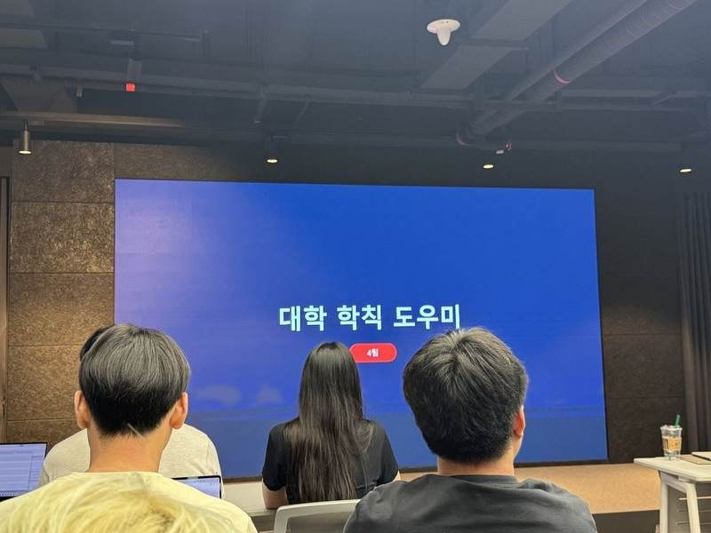

GPU·NPU 기반 LLM Agent 및 RAG 실습
From inference APIs to a document-grounded application
FuriosaAI RNGD NPU 기반 추론 환경에서 LLM API, Tool Calling, Agentic AI, MCP와 RAG를 학습하고, 팀 프로젝트로 대학 학칙 도우미 애플리케이션을 구현한 단기강좌입니다.
01 / OVERVIEW
An end-to-end LLM application workflow.

- CPU·GPU·NPU의 역할과 LLM inference workload 비교
- OpenAI-compatible API를 활용한 외부 추론 서버 호출 흐름 실습
- Single / Multi Tool Calling 및 Agent Loop 구조 이해
- MCP와 Tool 연결 방식, Allowlist·사용자 승인 등 Guardrail 학습
- RAG의 Indexing / Retrieval / Generation Pipeline 구현
- Streamlit 기반 팀 애플리케이션 개발 및 FuriosaAI 사옥 최종 발표
Public scope: API Key, 실제 서버 주소·SSH 정보, 비공개 Endpoint와 강의자료 원본은 공개 포트폴리오에 포함하지 않습니다.
02 / INFERENCE & TOOLS
Connecting models to executable tools.
GPU vs. NPU
AI 학습과 추론 workload의 차이를 기준으로 CPU·GPU·NPU의 역할과 병렬 연산 구조를 비교했습니다.
OpenAI-compatible interface
기존 SDK와 유사한 요청 형식으로 외부 inference endpoint를 연결하고 메시지·응답 구조를 확인했습니다.
Model proposes, harness executes
LLM은 실행할 Tool과 인자를 제안하고 실제 함수 실행과 검증은 모델 외부 Harness가 담당한다는 구조를 실습했습니다.
Control outside the model
Allowlist, 사용자 승인, 반복 상한 등을 통해 Tool 실행 범위와 Agent 반복을 제어해야 함을 학습했습니다.
03 / AGENTIC AI & MCP
Reason, act, observe, repeat.
Agent를 단순한 한 번의 LLM 호출이 아니라 Model + Tools + Orchestration 구조로 이해하고, Think–Act–Observe를 반복하는 Agent Loop와 ReAct 방식을 학습했습니다.
- JSON Schema 기반 Tool 정의와 인자 전달 구조 확인
- Planning, Reflection, Memory, Context Engineering 역할 정리
- Supervisor–Worker 기반 Multi-Agent 동작 방식 확인
- 반복 추론에 따른 입력 토큰·연산량·지연시간 증가 특성 분석
04 / RAG APPLICATION
Grounding answers in university regulations.
RAG는 모델을 다시 학습시키는 대신 질문 시점에 필요한 외부 문서를 검색해 Context로 제공하는 구조입니다. 팀 프로젝트에서는 대학 학칙·교과과정 문서를 대상으로 이를 실제 애플리케이션으로 연결했습니다.
Load · Split · Embed · Store
공개 가능한 PDF·CSV 자료를 정리하고 chunk 단위로 분리해 embedding 및 검색 대상으로 구성했습니다.
Vector search + metadata
질문과 관련된 문서 조각을 검색하고 학과·입학년도 같은 사용자 조건을 함께 반영했습니다.
Answer with evidence
검색 결과를 LLM Context로 전달하고 답변과 함께 관련 근거를 확인할 수 있도록 구성했습니다.
Streamlit application
로컬 UI에서 질문과 검색 결과를 검증하고 외부 테스트 환경에서 팀 단위로 기능을 확인했습니다.
RAG flow: User Context → Question → Documents → Chunking → Embedding → Retrieval → Metadata Filter → LLM Answer → Sources
05 / FINAL DEMO
Presenting the application at FuriosaAI.

단기강좌에서 학습한 Agentic AI와 RAG를 바탕으로 구현한 「대학 학칙 도우미」를 최종 팀 프로젝트로 정리해 FuriosaAI 사옥에서 발표했습니다.
프로젝트 발표와 기업 방문 경험은 FuriosaAI Experience 페이지에서 사진과 함께 정리했습니다.
06 / RESOURCES
Technical records and experience.
Course Repository
GPU·NPU, Tool Calling, Agentic AI, MCP, RAG와 대학 학칙 도우미 구현 과정을 정리한 GitHub 저장소
VIEW GITHUB ↗FuriosaAI Presentation
최종 애플리케이션 발표와 기업 방문 경험을 사진과 함께 정리한 포트폴리오 페이지
VIEW EXPERIENCE →